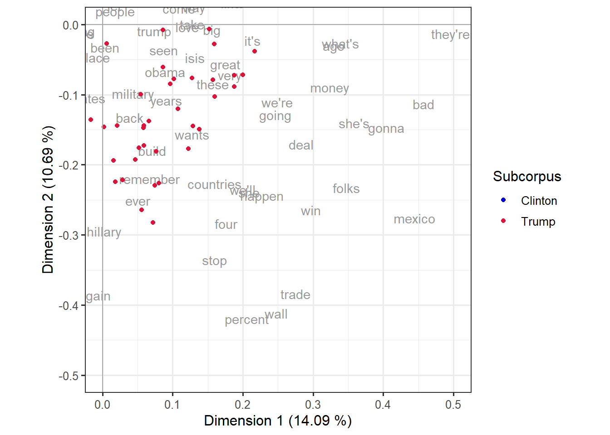
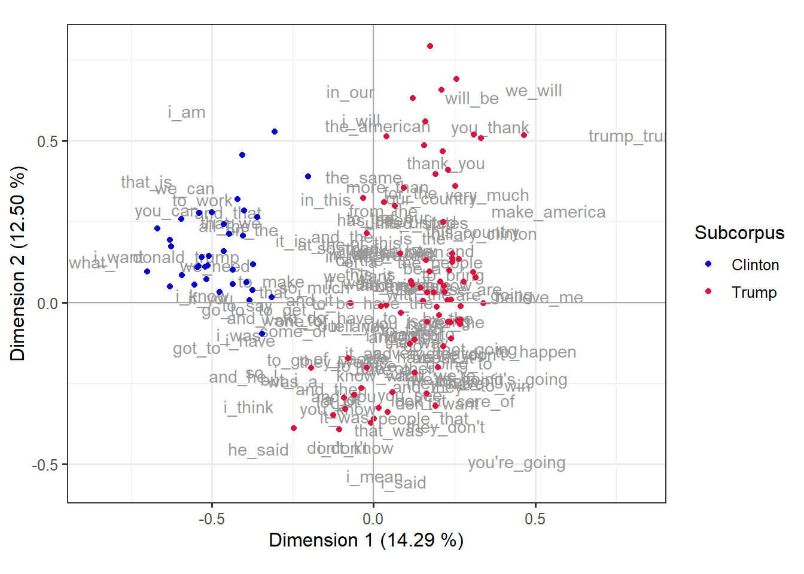
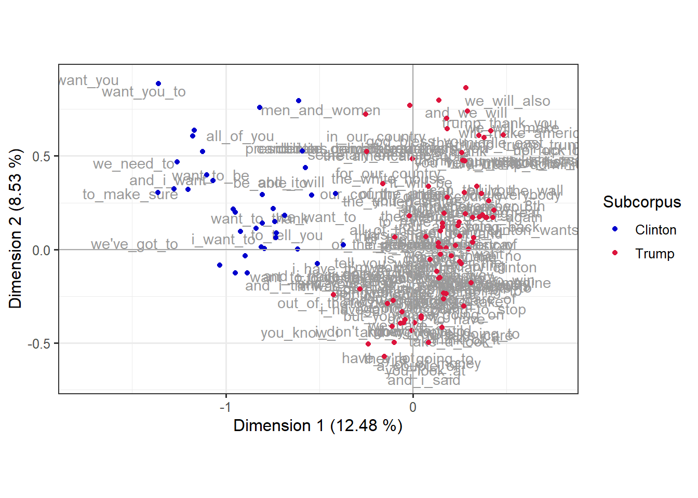
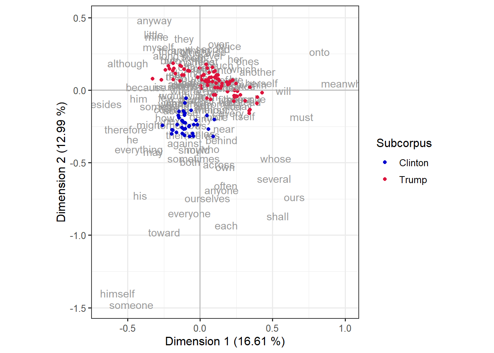

library(tidyverse)
library(mclm)
library(kableExtra)CA applied to the Trump-Clinton speeches
This document illustrates how to use correspondence analysis (CA) to investigate the similarities between Clinton speeches and Trump speeches in a corpus that collects them. The approach adopts a bird’s-eye perspective, looking at the broad picture we get if we aggregate over a wide range of features of the speeches.
A major advantage of the technique is that we can both compare the different documents based on the selected features, but also compare the features based on the documents they occur in and also see which features or groups of features are the ones that account for the most important dissimilarities between the documents.
We will illustrate four analyses with only minimal differences between each other. In all of them, the workflow consists of collecting frequency lists from each of the files in our corpus and create a matrix with one row per document and one column per type that occurs in the corpus. The cells contain the occurrence frequency: a cell \(ij\) will contain the occurrence of type \(j\) in the document \(i\). Such matrix of counts will be given to ca::ca(), a function that runs correspondence analysis and returns, among other things, the coordinates of row items and of column items in the principal components as well as the variance covered by each dimension. Section 1.3 will show the full code to obtain the data and plot it before delving into the actual case studies.
The difference between the analyses is the definition of the types collected in the frequency lists. Section 2 will select only function words from a predefined list as features, since they have been shown to reliably discriminate between different authors and registers. Section 3, on the other hand, will rely on high frequency content words by first excluding the types in a stoplist and then only keeping the top 150 items. Finally, Section 4 and Section 5 will use bigrams and trigrams as types, respectively.
1 Setup
1.1 Activate packages
We start by activating the R packages we will use, namely tidyverse, {mclm} and, for nice tables when reporting, kableExtra.
Note
1.2 Collect the corpus filenames
First, we collect the names of the corpus files and store them in an object called fnames. From this we also derive the short filenames (stored in short_fnames) and a character vector with, for each filename, the subcorpus (stored in sub_corp). The first variable, short_fnames is also an fnames object and will provide more practical names for plotting. The second variable, sub_corp is a character string and will help us assign colors in the plots based on whether the documents correspond to Clinton or Trump speeches. Table 1 illustrates a few of these values.
fnames <- get_fnames(file.path(corpus_folder, "clinton_trump"))
short_fnames <- short_names(fnames)
sub_corp <- fnames %>%
re_retrieve_first("/clinton_trump/([^/]+)", requested_group = 1)| fnames | short_fnames | sub_corp |
|---|---|---|
| _corpora/clinton_trump/Trump/Trump_2016-08-16.txt | Trump_2016-08-16 | Trump |
| _corpora/clinton_trump/Trump/Trump_2016-09-06-A.txt | Trump_2016-09-06-A | Trump |
| _corpora/clinton_trump/Trump/Trump_2016-11-01-A.txt | Trump_2016-11-01-A | Trump |
| _corpora/clinton_trump/Clinton/Clinton_2016-09-29.txt | Clinton_2016-09-29 | Clinton |
| _corpora/clinton_trump/Trump/Trump_2016-09-01-A.txt | Trump_2016-09-01-A | Trump |
1.3 General code
The code below will be implemented in each of the case studies below with the only difference in the freqlist() call in line 5.
Tip
In practice, if you were to run an analysis where this much code will be used over and over again with multiple modifications, it would be preferable to wrap it in functions. Section 6 will show you how, if you’re interested.
The first part of the code builds the matrix that we will apply the correspondence analysis to. This is an object of the data type matrix with as its rows the files and as its columns the features, and in the cells the absolute frequencies of the features in the files.
A convenient way in R to incrementally build that dataset, file by file, is to first store the data in a data frame with as its rows the features and as its columns the files. This is convenient, because we will ‘grow’ the data set file by file, and adding new columns to a data frame is a straigthforward and (in most situations sufficiently) time- and memory-efficient procedure in R. So that’s how we will go about. This is what lines 2-8 do in a loop along the filenames.
Lines 9-12 turn this dataframe into a matrix, transpose it and drop the rows and columns with only zero frequencies.
In line 14, we run correspondence analysis on this matrix, which we store in the variable d_ca. We could then inspect it by calling d_ca or summary(d_ca).
Then, lines 16-21 extract the coordinates of the rows and columns for plotting and create tibbles with the labels, positions and, in the case of the rows, the color coding based on the subcorpora. mclm::row_pcoord() and mclm::col_pcoord() extract the coordinates of the rows and columns from the object d_ca; we are only interested in the first two columns, which are the coordinates of the two first principal components, therefore we add [,c(1,2)]. We then turn the matrix into a tibble assigning the column names “text” and “word” to the rownames, since tibbles don’t use rownames. In the case of the documents, we also add the color coding column by creating a column “Subcorpus” and filling it with the vector sub_corp.
Lines 23 and 24 use the variance information from summary(d_ca) to enrich the labels of the axes in the plot.
The rest of the lines create a biplot.
d <- data.frame(row.names = features)
for (i in seq_along(fnames)) {
fname <- fnames[[i]] # identify i-th filename
short_fname <- short_fnames[[i]] # identify i-th short filename
flist <- freqlist(fname, ...) # build frequency list for file
flist <- flist[features] # filter that list to just features
d[[short_fname]] <- flist # add column to d named after filename
}
d <- d %>%
as.matrix() %>%
t() %>%
drop_empty_rc()
d_ca <- ca(d)
texts_df <- row_pcoord(d_ca)[,c(1, 2)] %>%
as_tibble(rownames = "text") %>%
mutate(Subcorpus = sub_corp)
words_df <- col_pcoord(d_ca)[,c(1, 2)] %>%
as_tibble(rownames = "word")
dim_1 <- sprintf("Dimension 1 (%.2f %%)", summary(d_ca)$scree[1,3])
dim_2 <- sprintf("Dimension 2 (%.2f %%)", summary(d_ca)$scree[2,3])
ggplot(words_df, aes(x = V1, y = V2)) +
geom_text(aes(label = word), col = "gray60") +
geom_point(data = texts_df, aes(x = V1, y = V2, col = Subcorpus)) +
scale_color_manual(values = c("#0000CD","#DC143C")) +
geom_hline(yintercept = 0, color = "darkgray") +
geom_vline(xintercept = 0, color = "darkgray") +
theme_bw(base_size = 12) +
labs(x = dim_1, y = dim_2) +
coord_fixed()
Parsing the
ggplot() call
What does each line from 26 to 34 do in the code chunk above?
Line 26 calls
ggplot()with the dataframe of columns (the features), assigning the variables “V1” and “V2” to thexandycoordiantes respectively. These are the automatic names given byas_tibble()in line 21 when we converted a matrix without column names.Line 27 plots the items of the variable “word” (the types of our features) as text, in the color “gray60”.
Line 28 plots the items of the dataframe of rows (documents) as dots, also with “V1” and “V2” in the axes but moreover with “Subcorpus” providing the color aesthetics.
Line 29 defines manually the colors to map to the “Subcorpus” variable. We could also use a variety of palettes, different colors, or remove the line and use the default color scheme of ggplot2.
Lines 30 and 31 add a horizontal and vertical line respectively, the former where
y = 0and the latter wherex = 0, both in dark gray.Line 32 sets the theme and the base size for the font. This only matters aesthetically and could be made different.
Line 33 assign the variables
dim_1anddim_2, defined in lines 23 and 24, as the labels of thexandyaxes.Line 34 indicates that the units of both axes should be the same, which is not the default case for ggplot2 plots. The numbers themselves of the coordinates are not meaningful, but the distances between the points are, and they assume that the distance between the point in \((0,1)\) (where \(x = 0\) and \(y = 1\)) and the centroid \((0, 0)\) is the same as the distance between the point \((1,0)\) and the centroid \((0,0)\).
coord_fixed()makes sure that’s the case.
2 Function words as features
In a first approach, we use so-called function words as features. In the field of stylometry, which is devoted to the quantitative study of linguistics style (e.g. in support of authorship attribution), it has long been established that function words are a powerful instrument in support of the identification of typical or even unique characteristics of the style of a specific author (or group of authors).
Function words include closed word classes such as pronouns, prepositions, auxiliaries, etc., as opposed to so-called content words such as nouns, verbs, adjectives…
Note
Zooming in on function words steers the analysis away from differences related to topic/content and foregrounds differences related to style. Using function words by no means is the only way to do this (alternatives are (i) zooming in on longer n-grams, e.g. 3-grams, 4-grams, or, (ii) if the information is available, looking at the frequencies of POS tags or POS tag n-grams, or (iii) looking at derived features such as lexical density, word length, sentence length, etc..
2.1 Specifying the features
We start by reading the names of the features for this analysis from the file function-words.txt and storing then into an object called features.
features <- read_types("assets/ca-trump-clinton/function-words.txt") %>%
print(n = 10)Type collection of length 149
type
-------
1 about
2 across
3 against
4 along
5 around
6 at
7 behind
8 beside
9 besides
10 by
...As shown when printing it, the object features contains 149 function words.
2.2 Building the file-by-feature matrix
Once we have collected our features we can create the matrix with one row per document and one column per feature.
d <- data.frame(row.names = features)
for (i in seq_along(fnames)) {
fname <- fnames[[i]]
short_fname <- short_fnames[[i]]
flist <- freqlist(fname)
flist <- flist[features]
d[[short_fname]] <- flist
}
d <- d %>%
as.matrix() %>%
t() %>%
drop_empty_rc()The top-left part of the resulting matrix (first ten rows, first ten columns) is shown in Table 2.
kbl(d[1:10, 1:10])| about | across | against | along | around | at | behind | besides | by | despite | |
|---|---|---|---|---|---|---|---|---|---|---|
| Clinton_2016-07-28 | 11 | 4 | 3 | 1 | 3 | 26 | 1 | 0 | 20 | 0 |
| Clinton_2016-07-29 | 24 | 4 | 0 | 0 | 2 | 8 | 1 | 0 | 7 | 0 |
| Clinton_2016-08-01 | 7 | 3 | 0 | 0 | 1 | 3 | 0 | 0 | 2 | 0 |
| Clinton_2016-08-05 | 22 | 5 | 3 | 1 | 5 | 30 | 4 | 0 | 17 | 0 |
| Clinton_2016-08-10 | 19 | 3 | 0 | 1 | 2 | 5 | 0 | 0 | 9 | 0 |
| Clinton_2016-08-11 | 18 | 10 | 4 | 1 | 3 | 23 | 2 | 0 | 17 | 0 |
| Clinton_2016-08-15 | 41 | 4 | 6 | 2 | 5 | 30 | 0 | 0 | 18 | 0 |
| Clinton_2016-08-16 | 16 | 5 | 0 | 1 | 1 | 7 | 0 | 0 | 4 | 0 |
| Clinton_2016-08-17 | 34 | 4 | 1 | 0 | 0 | 19 | 0 | 0 | 7 | 0 |
| Clinton_2016-08-25 | 17 | 2 | 3 | 0 | 2 | 9 | 0 | 0 | 11 | 0 |
2.3 Running correspondence analysis
Then we run the actual correspondence analysis and store the result in an object called d_ca. For reasons of brevity, we will skip the inspection of the summary report of the analysis, which we would normally do with summary(d_ca).
d_ca <- ca(d)
# summary(d_ca)2.4 Biplot
Next, we build the biplot, with color indicating the subcorpus that each file belongs to. First, we prepare the data needed for the plot. If you wanted to inspect the full output of row_pcoord() or col_pcoord(), you can run them separately first (e.g. row_pcoord(d_ca) %>% View()).
Table 3 shows a random sample from texts_df, i.e. the rows of the dataset with their principal component coordinates and the corpus they correspond to. The columns “V1” and “V2” contain the positions in the first and second dimension respectively.
texts_df <- row_pcoord(d_ca)[,c(1, 2)] %>%
as_tibble(rownames = "text") %>%
mutate(Subcorpus = sub_corp)
words_df <- col_pcoord(d_ca)[,c(1, 2)] %>%
as_tibble(rownames = "word")| text | V1 | V2 | Subcorpus |
|---|---|---|---|
| Clinton_2016-07-28 | 0.0579311 | -0.2679061 | Clinton |
| Clinton_2016-07-29 | -0.1143544 | -0.1454011 | Clinton |
| Clinton_2016-08-01 | -0.0449594 | -0.3173496 | Clinton |
| Clinton_2016-08-05 | -0.1063086 | -0.1732206 | Clinton |
| Clinton_2016-08-10 | -0.0437642 | -0.2394833 | Clinton |
| Clinton_2016-08-11 | -0.0171809 | -0.2379479 | Clinton |
Then we build the plot, shown in Figure 1. We can see that 16.61% of the variation is covered by the first dimension and 12.99% by the second dimension. In addition, both subcorpora form very clear clusters, mostly divided by the second dimension: features higher on the y-axis are more characteristic of Trump’s speeches, and those lower on the y-axis are more characteristic of Clinton’s.
dim_1 <- sprintf("Dimension 1 (%.2f %%)", summary(d_ca)$scree[1,3])
dim_2 <- sprintf("Dimension 2 (%.2f %%)", summary(d_ca)$scree[2,3])
ggplot(words_df, aes(x = V1, y = V2)) +
geom_text(aes(label = word), col = "gray60") +
geom_point(data = texts_df, aes(x = V1, y = V2, col = Subcorpus)) +
scale_color_manual(values = c("#0000CD","#DC143C")) +
geom_hline(yintercept = 0, color = "darkgray") +
geom_vline(xintercept = 0, color = "darkgray") +
theme_bw(base_size = 12) +
labs(x = dim_1, y = dim_2) +
coord_fixed()
2.5 Typical Clinton features vs. typical Trump features
Since the dimension that sets apart the Clinton speeches (top) most clearly from the Trump speeches (bottom) is the second dimension (y-axis), we may want to inspect the features that occupy extreme positions on the y-axis (and that hence contribute importantly to the y-axis). This is shown in Table 4
The code below selects sorts the dataframe with features information based on their coordinates in the second dimension (“V2”) and extracts the first 20 elements. Table 4 (a) has the highest values in the y-axis, i.e. the 20 features most typical of Clinton’s speeches, whereas Table 4 (b) has the lowest values in the y-axis, i.e. the 20features most typical of Trump’s speeches.
words_df %>%
arrange(desc(V2)) %>%
head(20) %>%
kbl(digits = 3) %>%
kable_paper(full_width = FALSE)
words_df %>%
arrange(V2) %>%
head(20) %>%
kbl(digits = 3) %>%
kable_paper(full_width = FALSE)Table 4: Words most characteristic of Clinton’s or Trump’s speeches.
| word | V1 | V2 |
|---|---|---|
| anyway | -0.316 | 0.484 |
| little | -0.320 | 0.386 |
| mine | -0.301 | 0.370 |
| they | -0.110 | 0.357 |
| over | 0.126 | 0.323 |
| twice | 0.201 | 0.307 |
| myself | -0.289 | 0.299 |
| second | 0.090 | 0.286 |
| anything | -0.065 | 0.278 |
| though | -0.176 | 0.273 |
| otherwise | 0.023 | 0.265 |
| onto | 0.823 | 0.265 |
| along | -0.234 | 0.242 |
| never | 0.074 | 0.240 |
| such | -0.055 | 0.236 |
| them | -0.040 | 0.226 |
| her | 0.244 | 0.219 |
| two | -0.187 | 0.207 |
| but | -0.223 | 0.207 |
| ones | 0.330 | 0.204 |
| word | V1 | V2 |
|---|---|---|
| someone | -0.474 | -1.477 |
| himself | -0.570 | -1.399 |
| toward | -0.246 | -0.979 |
| each | 0.181 | -0.930 |
| shall | 0.536 | -0.867 |
| everyone | -0.073 | -0.846 |
| ourselves | 0.050 | -0.742 |
| ours | 0.650 | -0.736 |
| his | -0.414 | -0.726 |
| anyone | 0.150 | -0.687 |
| often | 0.176 | -0.656 |
| several | 0.512 | -0.610 |
| own | 0.175 | -0.527 |
| across | 0.130 | -0.510 |
| both | -0.068 | -0.491 |
| sometimes | -0.043 | -0.470 |
| whose | 0.523 | -0.470 |
| may | -0.325 | -0.422 |
| should | -0.041 | -0.410 |
| my | -0.047 | -0.407 |
3 High frequency content words as features
In a second approach, we look at content words instead. Obviously, then, topic will start playing an important role (although some stylistic differences may still be present in the patterns that emerge). The nature of this analysis is very different to the one shown in Section 2, and it serves different purposes. Even so, it is a legitimate question whether the Clinton speeches and the Trump speeches turn out to be as clearly separated as in the previous analysis from the perspective of content words. Moreover, we can inspect which (groups of) content words will emerge as the ones that are most characteristic of the different areas in the resulting map.
3.1 Specifying the features
From a technical perspective, the only difference with the case study in Section 2 is how we define the features. This time, we build a complete frequency list of the whole corpus, we then remove a number of stop words (mostly function words, but also some undesired types such as 000 and --), and finally we treat the top 150 (i.e. the 150 highest frequency items) of the remaining items as our features. The number 150 is an arbitrary choice. We chose it so we could make a fair comparison to the performance of the analysis that used function words.
stop_list <- read_types("assets/ca-trump-clinton/stop_list.txt")
print(stop_list, n = 5)Type collection of length 154
type
-------
1 000
2 about
3 across
4 against
5 along
...features <- freqlist(fnames) %>%
drop_types(stop_list) %>%
keep_pos(1:150) %>%
as_types() %>%
print(n = 10)Type collection of length 150
type
---------
1 again
2 ago
3 also
4 america
5 american
6 americans
7 applause
8 are
9 audience
10 back
...3.2 Next steps and plot
The next steps, all the way up to the creation of the plot, are completely analogous to the previous analysis. Figure 2 shows the biplot.
d <- data.frame(row.names = features)
for (i in seq_along(fnames)) {
fname <- fnames[[i]]
short_fname <- short_fnames[[i]]
flist <- freqlist(fname)
flist <- flist[features]
d[[short_fname]] <- flist
}
d <- d %>%
as.matrix() %>%
t() %>%
drop_empty_rc()
d_ca <- ca(d)
texts_df <- row_pcoord(d_ca)[,c(1, 2)] %>%
as_tibble(rownames = "text") %>%
mutate(Subcorpus = sub_corp)
words_df <- col_pcoord(d_ca)[,c(1, 2)] %>%
as_tibble(rownames = "word")dim_1 <- sprintf("Dimension 1 (%.2f %%)", summary(d_ca)$scree[1,3])
dim_2 <- sprintf("Dimension 2 (%.2f %%)", summary(d_ca)$scree[2,3])
ggplot(words_df, aes(x = V1, y = V2)) +
geom_text(aes(label = word), col = "gray60") +
geom_point(data = texts_df, aes(x = V1, y = V2, col = Subcorpus)) +
scale_color_manual(values = c("#0000CD","#DC143C")) +
geom_hline(yintercept = 0, color = "darkgray") +
geom_vline(xintercept = 0, color = "darkgray") +
theme_bw(base_size = 12) +
labs(x = dim_1, y = dim_2) +
coord_fixed()
We can see that 14.09% of the variation is covered by the first dimension and 10.69% by the second dimension. This time it is the combination of the two dimensions that sets apart the two groups of speeches. This makes it a bit more difficult to select the items on the basis of their co-ordinates. We will do so in a minute, but first, we use a more visual approach. We will demonstrate how we can zoom in on a specific area, if we want to be able to better read the words in that area. This is demonstrated in Figure 3 for the region of x-values ranging from 0 to 0.5 and y-values ranging from -0.5 to 0.
ggplot(words_df, aes(x = V1, y = V2)) +
geom_text(aes(label = word), col = "gray60") +
geom_point(data = texts_df, aes(x = V1, y = V2, col = Subcorpus)) +
scale_color_manual(values = c("#0000CD","#DC143C")) +
geom_hline(yintercept = 0, color = "darkgray") +
geom_vline(xintercept = 0, color = "darkgray") +
theme_bw(base_size = 12) +
labs(x = dim_1, y = dim_2) +
coord_fixed(xlim = c(0, 0.5), ylim = c(-0.5, 0))
Identifying the same items by co-ordinates can be done by filtering the items based on their values in the x-axis (“V1”) and y-axis (“V2”); the output is shown Table 5:
words_df %>%
filter(V1 >= 0 & V1 <= 0.5 & V2 >= -0.5 & V2 <= 0) %>%
kbl(digits = 3) %>%
kable_paper(full_width = FALSE) %>%
scroll_box(height = "400px")| word | V1 | V2 |
|---|---|---|
| ago | 0.329 | -0.030 |
| back | 0.039 | -0.133 |
| bad | 0.457 | -0.113 |
| been | 0.003 | -0.033 |
| big | 0.156 | -0.007 |
| build | 0.071 | -0.179 |
| countries | 0.160 | -0.227 |
| deal | 0.284 | -0.171 |
| ever | 0.051 | -0.251 |
| folks | 0.347 | -0.233 |
| four | 0.176 | -0.284 |
| going | 0.246 | -0.128 |
| gonna | 0.404 | -0.147 |
| great | 0.175 | -0.056 |
| happen | 0.227 | -0.244 |
| hillary | 0.002 | -0.295 |
| isis | 0.131 | -0.047 |
| it's | 0.213 | -0.022 |
| love | 0.121 | -0.003 |
| mexico | 0.444 | -0.276 |
| military | 0.043 | -0.098 |
| money | 0.323 | -0.089 |
| obama | 0.089 | -0.067 |
| percent | 0.206 | -0.420 |
| remember | 0.067 | -0.220 |
| seen | 0.088 | -0.036 |
| she | 0.209 | -0.239 |
| she's | 0.358 | -0.140 |
| stop | 0.160 | -0.335 |
| these | 0.157 | -0.085 |
| they're | 0.496 | -0.013 |
| trade | 0.275 | -0.384 |
| trump | 0.074 | -0.009 |
| very | 0.181 | -0.072 |
| wall | 0.248 | -0.412 |
| wants | 0.128 | -0.156 |
| we'll | 0.200 | -0.235 |
| we're | 0.249 | -0.111 |
| what's | 0.339 | -0.026 |
| win | 0.297 | -0.264 |
| years | 0.091 | -0.108 |
4 High frequency bigrams as features
In our third approach, we work with the 150 most frequent bigrams. Notice in the code snippet below how we use the argument ngram_size = 2 to make sure that freqlist() builds a frequency list of bigrams instead of single word forms. Notice also that prior to identifying the top 150, we remove all bigrams with either applause, cheering, or -- in them. We do this because in this corpus those items (almost always) are part of the annotation instead of real tokens.
features <- fnames %>%
freqlist(ngram_size = 2) %>%
drop_re("(applause|cheering|--)") %>%
keep_bool(ranks(.) <= 150) %>% # or keep_pos(1:150)
as_types() %>%
print(n = 10)Type collection of length 150
type
--------
1 a_great
2 a_lot
3 a_very
4 about_it
5 all_of
6 all_the
7 and_he
8 and_i
9 and_it
10 and_it's
...The rest of the steps again is identical to what it was in the previous analysis, except that when we build frequency lists for each file, we must make sure that here too we build a frequency list of bigrams.
Tip
The step drop_re("(applause|cheering|--)") is not necessary here, because bigrams containing applause, cheering, or -- are not part of the feature list anyway.
# build file by feature frequency matrix
d <- data.frame(row.names = features)
for (i in seq_along(fnames)) {
fname <- fnames[[i]]
short_fname <- short_fnames[[i]]
flist <- freqlist(fname, ngram_size = 2)
flist <- flist[features]
d[[short_fname]] <- flist
}
d <- d %>%
as.matrix() %>%
t() %>%
drop_empty_rc()
# conduct CA
d_ca <- ca(d)
# summary(d_ca)
# preparations for biplot
texts_df <- row_pcoord(d_ca)[,c(1, 2)] %>%
as_tibble(rownames = "text") %>%
mutate(Subcorpus = sub_corp)
words_df <- col_pcoord(d_ca)[,c(1, 2)] %>%
as_tibble(rownames = "word")dim_1 <- sprintf("Dimension 1 (%.2f %%)", summary(d_ca)$scree[1,3])
dim_2 <- sprintf("Dimension 2 (%.2f %%)", summary(d_ca)$scree[2,3])
ggplot(words_df, aes(x = V1, y = V2)) +
geom_text(aes(label = word), col = "gray60") +
geom_point(data = texts_df, aes(x = V1, y = V2, col = Subcorpus)) +
scale_color_manual(values = c("#0000CD","#DC143C")) +
geom_hline(yintercept = 0, color = "darkgray") +
geom_vline(xintercept = 0, color = "darkgray") +
theme_bw(base_size = 12) +
labs(x = dim_1, y = dim_2) +
coord_fixed()
We can see that 14.29% of the variation is covered by the first dimension and 12.50% by the second dimension. Moreover, Clinton’s speeches are tightly grouped on the left side of the plot whereas Trump’s extend over the right side, so the x-axis is now the relevant dimension. Table 6 shows the most characteristic bigrams for each of the authors, identified by having the lowest values in the first dimension (for Clinton’s) or the highest values (for Trump’s).
words_df %>%
arrange(V1) %>%
head(20) %>%
kbl(digits = 3) %>%
kable_paper()
words_df %>%
arrange(desc(V1)) %>%
head(20) %>%
kbl(digits = 3) %>%
kable_paper()Table 6: 20 most characteristic bigrams of Clinton’s or Trump’s speeches.
| word | V1 | V2 |
|---|---|---|
| what_i | -0.863 | 0.128 |
| i_want | -0.789 | 0.144 |
| that_is | -0.701 | 0.377 |
| you_can | -0.639 | 0.288 |
| we_can | -0.582 | 0.356 |
| donald_trump | -0.578 | 0.144 |
| i_am | -0.578 | 0.592 |
| got_to | -0.545 | -0.137 |
| i_know | -0.529 | 0.023 |
| to_work | -0.527 | 0.319 |
| if_you | -0.503 | 0.016 |
| we_need | -0.489 | 0.116 |
| go_to | -0.465 | -0.019 |
| all_the | -0.462 | 0.240 |
| and_that | -0.449 | 0.281 |
| that_we | -0.441 | 0.248 |
| and_he | -0.421 | -0.225 |
| i_was | -0.417 | -0.098 |
| to_say | -0.392 | -0.006 |
| and_i | -0.387 | -0.046 |
| word | V1 | V2 |
|---|---|---|
| trump_trump | 0.819 | 0.518 |
| make_america | 0.540 | 0.285 |
| believe_me | 0.512 | 0.020 |
| to_happen | 0.501 | -0.148 |
| we_will | 0.497 | 0.659 |
| it's_going | 0.486 | -0.234 |
| you're_going | 0.443 | -0.490 |
| to_win | 0.407 | -0.255 |
| are_going | 0.374 | 0.026 |
| you_thank | 0.362 | 0.544 |
| very_much | 0.352 | 0.337 |
| care_of | 0.346 | -0.301 |
| hillary_clinton | 0.344 | 0.216 |
| not_going | 0.329 | -0.141 |
| this_country | 0.307 | 0.220 |
| will_be | 0.305 | 0.634 |
| we_don't | 0.301 | -0.157 |
| think_of | 0.283 | -0.239 |
| these_are | 0.279 | 0.045 |
| do_you | 0.268 | -0.155 |
5 High frequency trigrams as features
In our fourth approach, we work with the 150 most frequent trigrams; the workflow is the same as in Section 4, but with ngram_size = 3 instead of 2. Figure 5 shows the biplot.
features <- fnames %>%
freqlist(ngram_size = 3) %>%
drop_re("(applause|cheering|--)") %>%
keep_bool(ranks(.) <= 150) %>%
as_types() %>%
print(n = 10)Type collection of length 150
type
----------------------
1 a_couple_of
2 a_long_time
3 a_lot_of
4 a_trump_administration
5 all_of_the
6 all_of_you
7 all_over_the
8 america_great_again
9 and_by_the
10 and_hillary_clinton
...d <- data.frame(row.names = features)
for (i in seq_along(fnames)) {
fname <- fnames[[i]]
short_fname <- short_fnames[[i]]
flist <- freqlist(fname, ngram_size = 3)
flist <- flist[features]
d[[short_fname]] <- flist
}
d <- d %>%
as.matrix() %>%
t() %>%
drop_empty_rc()
d_ca <- ca(d)
texts_df <- row_pcoord(d_ca)[,c(1, 2)] %>%
as_tibble(rownames = "text") %>%
mutate(Subcorpus = sub_corp)
words_df <- col_pcoord(d_ca)[,c(1, 2)] %>%
as_tibble(rownames = "word")dim_1 <- sprintf("Dimension 1 (%.2f %%)", summary(d_ca)$scree[1,3])
dim_2 <- sprintf("Dimension 2 (%.2f %%)", summary(d_ca)$scree[2,3])
ggplot(words_df, aes(x = V1, y = V2)) +
geom_text(aes(label = word), col = "gray60") +
geom_point(data = texts_df, aes(x = V1, y = V2, col = Subcorpus)) +
scale_color_manual(values = c("#0000CD","#DC143C")) +
geom_hline(yintercept = 0, color = "darkgray") +
geom_vline(xintercept = 0, color = "darkgray") +
theme_bw(base_size = 12) +
labs(x = dim_1, y = dim_2) +
coord_fixed()
We can see that 12.48% of the variation is covered by the first dimension and 8.53% by the second dimension. Moreover, Clinton’s speeches are again tightly grouped on the left side of the plot whereas Trump’s extend over the right side with an impressive proportion of features, so the x-axis is now the relevant dimension. Table 7 shows the most characteristic bigrams for each of the authors, identified by having the lowest values in the first dimension (for Clinton’s) or the highest values (for Trump’s).
words_df %>%
arrange(V1) %>%
head(20) %>%
kbl(digits = 3) %>%
kable_paper()
words_df %>%
arrange(desc(V1)) %>%
head(20) %>%
kbl(digits = 3) %>%
kable_paper()Table 7: 20 most characteristic bigrams of Clinton’s or Trump’s speeches.
| word | V1 | V2 |
|---|---|---|
| i_want_you | -1.769 | 0.912 |
| to_make_sure | -1.509 | 0.303 |
| we_need_to | -1.490 | 0.465 |
| we've_got_to | -1.488 | 0.035 |
| want_you_to | -1.437 | 0.850 |
| and_i_want | -1.310 | 0.376 |
| want_to_be | -1.078 | 0.402 |
| i_want_to | -1.012 | 0.060 |
| all_of_you | -0.920 | 0.613 |
| want_to_thank | -0.819 | 0.170 |
| be_able_to | -0.760 | 0.362 |
| and_i_think | -0.690 | -0.188 |
| to_tell_you | -0.671 | 0.082 |
| want_to_do | -0.664 | -0.143 |
| and_i_will | -0.650 | 0.366 |
| you_know_i | -0.603 | -0.439 |
| and_i_have | -0.598 | -0.137 |
| out_of_the | -0.536 | -0.281 |
| we_want_to | -0.516 | 0.180 |
| men_and_women | -0.491 | 0.750 |
| word | V1 | V2 |
|---|---|---|
| her_up_lock | 0.755 | 0.536 |
| up_lock_her | 0.755 | 0.536 |
| lock_her_up | 0.733 | 0.472 |
| trump_administration_will | 0.715 | 0.477 |
| a_trump_administration | 0.709 | 0.463 |
| usa_usa_usa | 0.668 | 0.483 |
| will_make_america | 0.591 | 0.628 |
| trump_trump_trump | 0.583 | 0.565 |
| build_the_wall | 0.550 | 0.322 |
| we_will_make | 0.530 | 0.658 |
| hillary_clinton_wants | 0.517 | 0.111 |
| we_will_also | 0.508 | 0.802 |
| hillary_clinton_is | 0.480 | 0.471 |
| trump_thank_you | 0.461 | 0.683 |
| can_you_imagine | 0.425 | -0.174 |
| to_bring_back | 0.423 | 0.128 |
| going_to_win | 0.415 | -0.158 |
| thank_you_everybody | 0.407 | 0.300 |
| the_middle_east | 0.400 | 0.576 |
| she_wants_to | 0.387 | -0.198 |
If you’re curious about a specific item, you can use mclm::conc() to collect its occurrences. Notice that even infrequent expressions can be typical if they are significantly more frequent in one group of documents than in the other.
conc(fnames, "(?xi) i \\s+ want \\s+ you") %>%
print_kwic(n = 5)idx left| match |right
1 ...ere and around the country,|I want you|to know I've heard you. You...
2 ...that way. Well, here's what|I want you|to know. You deserve a pres...
3 ...ou what I would do, because|I want you|to hold me accountable, pre...
4 ...table twists and turns. But|I want you|to imagine what you will fe...
5 ...t ideas out in America. And|I want you|to have a say. And that mea...
...6 Extra: writing functions
If you have a lot of code that needs to be run over and over again with minimal modifications, writing a function is a good idea. However, putting everything into one overarching function is not always the best solution. Both to facilitate debugging and to give you the opportunity to inspect elements at different stages, you might want to write smaller functions for functional units of code.
One way of going about this with the code in this document is by writing one function to compile the frequencies, one to preprocess the result for plotting and one to generate the plot.
6.1 Compile frequencies
The function below, compile_frequencies(), takes as arguments the features, the fnames, the short_fnames and the different arguments we want to give to freqlist(), since that will change in each case study.
Line 5 creates the empty dataframe with the features as rows. Lines 6 through 12 run the for loop across filenames that creates one frequency list per document, filters it by the features and adds them as a column to the dataframe. The ... in the freqlist() call in line 9 provides whatever arguments we have given at the end of compile_frequencies() (other than the three main ones), if any, to freqlist(). Finally, lines 14 through 17 turn the dataframe into a matrix, transpose it and remove all empty rows and columns. This is what is returned by the function: the output of compile_frequencies() is a matrix of frequencies that we can inspect and manipulate as needed, and that would be given to ca().
compile_frequencies <- function(features,
fnames,
short_fnames,
...) {
d <- data.frame(row.names = features)
for (i in seq_along(fnames)) {
fname <- fnames[[i]]
short_fname <- short_fnames[[i]]
flist <- freqlist(fname, ...)
flist <- flist[features]
d[[short_fname]] <- flist
}
d %>%
as.matrix() %>%
t() %>%
drop_empty_rc()
}6.2 Obtain coordinates
By giving the output of compile_frequencies() to ca(), we obtain a correspondence analysis object that we could call d_ca. Next, we might want to write one or two functions to create the small tibbles with the row and column coordinates and the variables for plotting. Here I will show how to create one function get_coords() that takes the object d_ca and the subcorpora vector and returns a named list with two elements. Alternatively, you could also write two separate functions: one for the rows and one for the columns (the latter wouldn’t need the subcorpora vector).
Here, lines 2-4 replicate the texts_df definition and lines 6-7, that of words_df. Lines 9-12 create and return a named list with both elements.
If you wrote two separate functions, you could call them to generate texts_df and words_df separately. Instead, the output of get_coords() will be a list, let’s say ca_coords, of which the element ca_coords$rows will correspond to texts_df and ca_coords$cols will correspond to words_df.
6.3 Plot
Finally, we can write a plotting function that covers everything we need to generate our plot. Such functions are extremely useful when writing papers in which you need to print multiple different plots with similar aesthetic characteristics. Moreover, if you have one function to generate a lot of different plots, i.e. scatterplots for different datasets, and you decide to change the color palette, the background color or the size of the points, you can simply adjust the function, and all the plots generated with it will change in response.
The function below, plot_ca(), takes the result of get_coords() and a list with variance data extracted from summary(d_ca)$scree[,3]. Lines 2 and 3 take the variance information to include it in the axis labels, later defined in line 12. In lines 5 and 7, what used to be texts_df and words_df are now ca_coords$rows and ca_coords$cols, i.e. the elements “rows” and “cols” from the output of get_coords().
plot_ca <- function(ca_coords, variances) {
dim_1 <- sprintf(
"Dimension 1 (%.2f %%)",
variances[[1]]
)
dim_2 <- sprintf(
"Dimension 2 (%.2f %%)",
variances[[2]]
)
ggplot(ca_coords$cols, aes(x = V1, y = V2)) +
geom_text(aes(label = word), col = "gray60") +
geom_point(
data = ca_coords$rows,
aes(x = V1, y = V2, col = Subcorpus)
) +
scale_color_manual(values = c("#0000CD","#DC143C")) +
geom_hline(yintercept = 0, color = "darkgray") +
geom_vline(xintercept = 0, color = "darkgray") +
theme_bw(base_size = 12) +
labs(x = dim_1, y = dim_2) +
coord_fixed()
}6.4 Example: first case study
With these functions, the code for the case study in Section 2 (after loading fnames, short_fnames and sub_corp, of course) becomes the one below. After each line, we have a significant unit that we might want to inspect or manipulate.
features <- read_types("assets/ca-trump-clinton/function-words.txt")
d <- compile_frequencies(features, fnames, short_fnames)
d_ca <- ca(d)
ca_coords <- get_coords(d_ca, sub_corp)
plot_ca(ca_coords, summary(d_ca)$scree[,3])
Line 1 reads the files with features; after it we can check whether it actually contains the items we wanted.
Line 2 creates the matrix of documents by features, and we can inspect it afterwards with something like
d[1:10,1:10]ordim(d).Line 3 runs the correspondence analysis and we can inspect the output with
d_caorsummary(d_ca).Line 4 prepares the coordinates for plotting. We can then also check the most extreme features with
head(arrange(ca_coords$cols, desc(V1))), for example.Line 5 plots the dots on the components (Figure 6).
6.5 Full code
The full code of this document could then be compressed as in the chunk below. Notice that here I have excluded all calls to print(), kbl() and kable_paper(). I have also used different variable names for the different studies instead of overwriting variables, since it can cause problems when you lose track of what is stored as what. Finally, I dedicated a line to define the path to the corpus and one to define the path to the lists of function words and the stoplist.
assets <- "assets/ca-trump-clinton"
ct_corpus <- file.path(corpus_folder, "clinton_trump")
fnames <- get_fnames(ct_corpus)
short_fnames <- short_names(fnames)
sub_corp <- fnames %>%
re_retrieve_first(
"/clinton_trump/([^/]+)",
requested_group = 1
)
# First case study ----
features1 <- read_types(
file.path(assets, "function-words.txt")
)
d1 <- compile_frequencies(features1, fnames, short_fnames)
d1[1:10, 1:10]
d_ca1 <- ca(d)
ca_coords1 <- get_coords(d_ca1, sub_corp)
head(ca_coords1$rows)
plot_ca(ca_coords1, summary(d_ca1)$scree[,3])
## Inspect extremes ----
arrange(ca_coords1$cols, desc(V2)) %>% head(20)
arrange(ca_coords1$cols, V2) %>% head(20)
# Second case study ----
stop_list <- read_types(
file.path(assets, "stop_list.txt")
)
features2 <- freqlist(fnames) %>%
drop_types(stop_list) %>%
keep_bool(ranks(.) <= 150) %>%
as_types()
d2 <- compile_frequencies(features2, fnames, short_fnames)
d_ca2 <- ca(d2)
ca_coords2 <- get_coords(d_ca2, sub_corp)
plot_ca(ca_coords2, summary(d_ca2)$scree[,3])
## Zoomed-in plot ----
plot_ca(ca_coords2, summary(d_ca2)$scree[,3]) +
coord_fixed(xlim = c(0, 0.5), ylim = c(-0.5, 0))
## Select items ----
ca_coords2$cols %>%
filter(V1 >= 0 & V1 <= 0.5 & V2 >= -0.5 & V2 <= 0)
# Third case study ----
features3 <- fnames %>%
freqlist(ngram_size = 2) %>%
drop_re("(applause|cheering|--)") %>%
keep_bool(ranks(.) <= 150) %>%
as_types()
d3 <- compile_frequencies(
features3,
fnames,
short_fnames,
ngram_size = 2
)
d_ca3 <- ca(d3)
ca_coords3 <- get_coords(d_ca3, sub_corp)
plot_ca(ca_coords3, summary(d_ca3)$scree[,3])
## Inspect extremes ----
arrange(ca_coords3$cols, V1) %>% head(20)
arrange(ca_coords3$cols, desc(V1)) %>% head(20)
# Fourth case study ----
features4 <- fnames %>%
freqlist(ngram_size = 3) %>%
drop_re("(applause|cheering|--)") %>%
keep_bool(ranks(.) <= 150) %>%
as_types()
d4 <- compile_frequencies(
features4,
fnames,
short_fnames,
ngram_size = 4
)
d_ca4 <- ca(d4)
ca_coords4 <- get_coords(d_ca4, sub_corp)
plot_ca(ca_coords4, summary(d_ca4)$scree[,])
## Inspect extremes ----
arrange(ca_coords4$cols, V1) %>% head(20)
arrange(ca_coords4$cols, desc(V1)) %>% head(20)